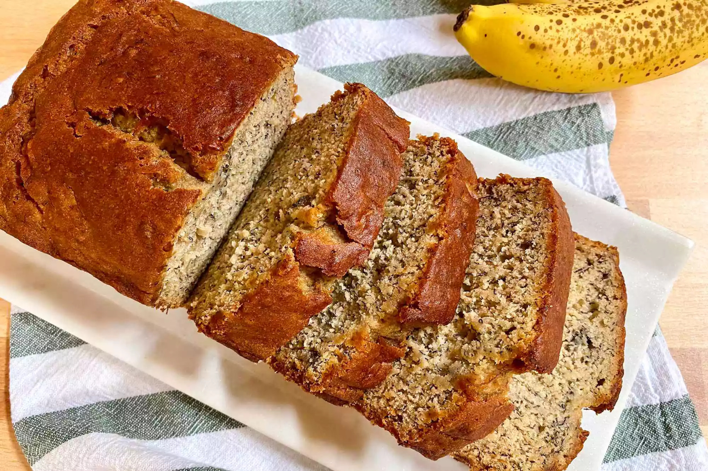

Banana Bread Recipe

Description
This is a great recipe for Banana Bread. My mom
would often make this recipe when I was young, and its
always a great option for an easy and quick comfort
food that gets better as over time.
Ingredients:
- Flour - 1 3/4 Cups
- Baking Powder - 1 1/4 teaspoons
- Baking Soda - 1/2 teaspoon
- Pinch of salt
- Sugar - 2/3 Cup
- Shortening - 1/3 Cup
- Eggs - 2
- Milk - 2 Tablespoons
- Mashed banana - 1 Cup
Recipe:
- Preheat oven to 350°
- Mix flour, baking powder, baking soda, and salt in a large bowl.
- Beat together sugar and shortening in a medium bowl.
- Mix eggs, milk, and bananas into the sugar and shortening mixture.
- Add wet ingredents into the dry and mix until combined but still lumpy.
- Pour into na oiled loaf pan and smooth top.
- cook until a knife inserted into the middle of the loaf comes out clean.